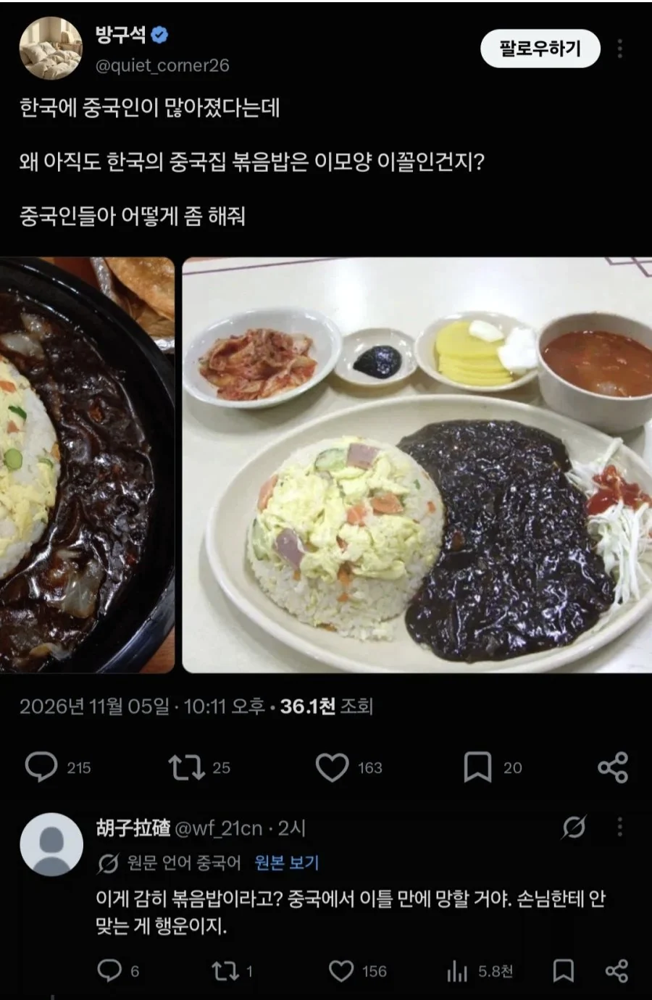

사악한 미군에게 죽었기 때문

사악한 미군에게 죽었기 때문
저번에 울 회사 점심에 중국집갔는데 한명이 새우볶음밥 시켰는데 밥이 그냥 안볶은 맨 흑미밥 나와서 빡쳤던데 ㅋㅋㅋ
중국사람이 하는 마라탕, 양꼬치집
귀찮은것 이전에 중국인의 피가 저런 볶음밥을 용납 못하려나
역삼에 있는 양꼬치집 계란볶음밥 먹는데 진심 미쳤더라
진짜 한중일 셋다 볶음밥 해먹는데 왜 이꼴난건지 모르겟네
요새 볶음밥은 양꼬치집가서 먹으면 된다
저분이 누군지 모르겠지만 요리하다 죽었으니 1류 쉐프겠지?
죽기 직전까지 웍을 놓지 않았다는 후문이 있음
전주 노벨반점에 물짜장 먹으러갔다가 볶음밥 시켰는데 진짜 잘볶은 볶음밥 나오더라 개꿀맛이였음.
물짜장은 내입맛에 안맞더라ㅋㅋ
물짜장은 호불호 많이갈리긴하지 ㅋㅋㅋ
진지하게는 하수관 막히는 문제로 라드를 거의 안쓰게 되면서 1차로 맛없어지고
굳이 박봉에 몸만 상하는 중식요리사를 기피하게되면서
주방장들 수준이 개처박음
도대체 얼마나 맛있었으면 먹다가 사람이 죽는거임??
거 와서 배달일 하지말고 주방일좀 해라
맨 밑짤 따거 이름 무슨뜻이지
동방대국정통지흑보세교회
터질듯한 볶음밥 요리사?
항미원조 호소를 이런식으로 하네
진짜 볶음밥 먹고 싶으면 양꼬치 집에서 시키라고 하더만
인식이랑 꽤 많이 다른게 저렇게 나와도 그냥 짜장이랑 같이 먹을만하고 잘 팔림
다른 모든 이유보다 이게 가장 큼
짜장 소스가 그냥 맨밥 비벼먹어도 맛있으니까
애초에 짜장밥이라는 매뉴도 있고 그냥 ㅈ같은데 요즘은 정성껏 볶는게 오히려 손해겠더라
그런데도 욕 안먹고 팔리는 이유 애초에 짜장밥이라는 음식이 있을 정도로 저기 짜장 소스 자체가 치트키임
마파두부에 볶음밥도 맛있엉
한반도에 계란볶음밥을 전수하시려다 미군의 흉탄에 목숨을 잃으신 분인건가
계란탕을 주는 볶음밥 = 일단 믿고 먹는다
지방 전통시장 근처에 있는 중국집 가면 됨